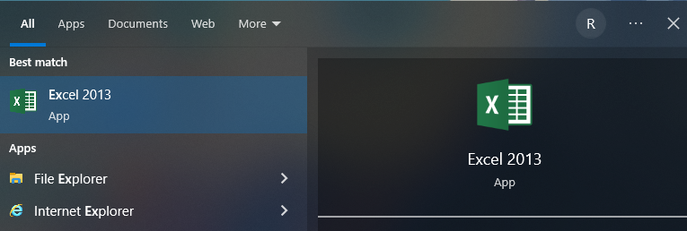
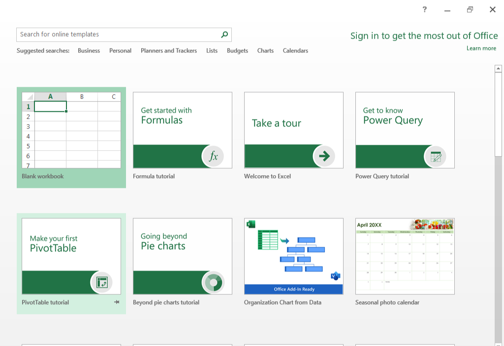
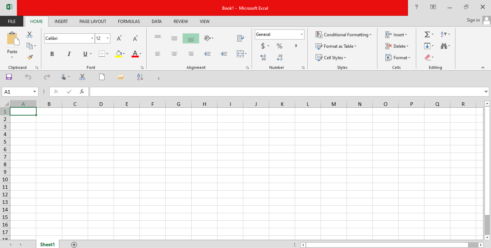
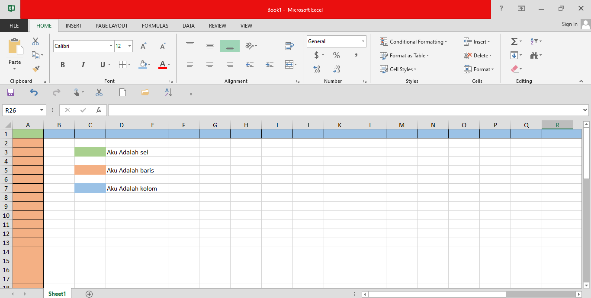

Untuk belajar Excel, ada dua cara: pertama, menggunakan Office 365 atau aplikasi Excel secara langsung. Kali ini, saya akan menggunakan aplikasi Excel langsung. Oke, mari kita mulai!
"Excel"
Blank Workbook

NOTE: Di sini saya menggunakan Excel 2010. Jika kalian menggunakan versi lain atau Office 365, itu tidak masalah, karena fungsinya sama saja.
Apakah kalian sudah familiar dengan istilah-istilah ini? Kalau belum, berikut penjelasannya:
Kolom atau columns adalah kotak-kotak yang terletak secara vertikal dengan label huruf, seperti A, B, dan seterusnya. Kolom berjejer secara horizontal, dari kiri ke kanan.
Baris atau rows adalah kotak-kotak yang terletak secara horizontal, dengan nomor baris dimulai dari 1, 2, dan seterusnya.
Sel adalah pertemuan antara kolom dan baris. Sebagai contoh, jika kolom adalah A dan baris adalah 8, maka sel tersebut adalah A8.
kolom = A
baris = 8
sel = A8
| A | B |
|---|---|
| A1 | |
| A2 | |
| A3 | |
| A4 | |
| A5 | |
| A6 | |
| A7 | |
| A8 | < -- Aku adalah sel A8 |
Untuk contoh lebih jelas, lihat gambar ini:

Oke, sebelum kalian lanjut ke tahap selanjutnya, pastikan kalian wajib bisa memahami dasar-dasar ini, karena sangat penting!
Lanjutkan ke: